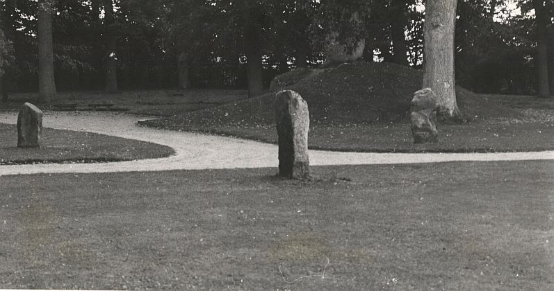
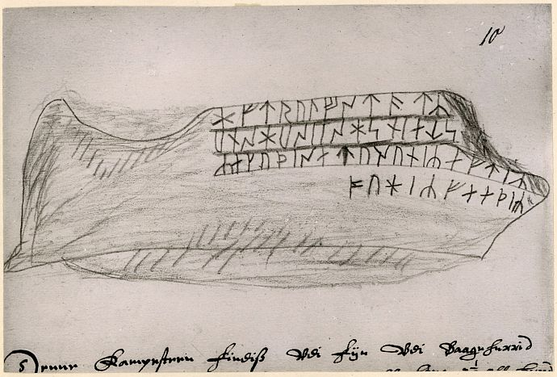
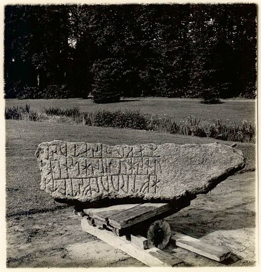
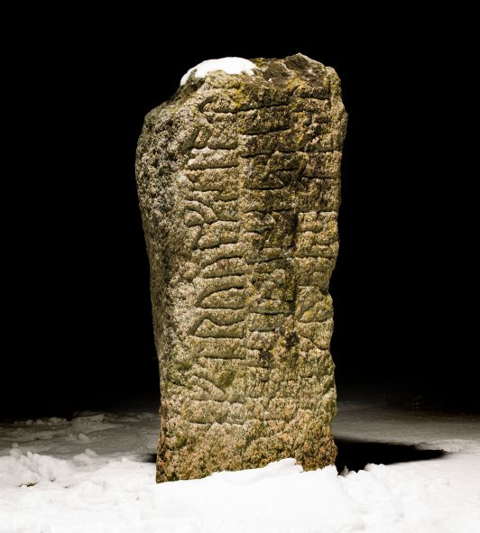
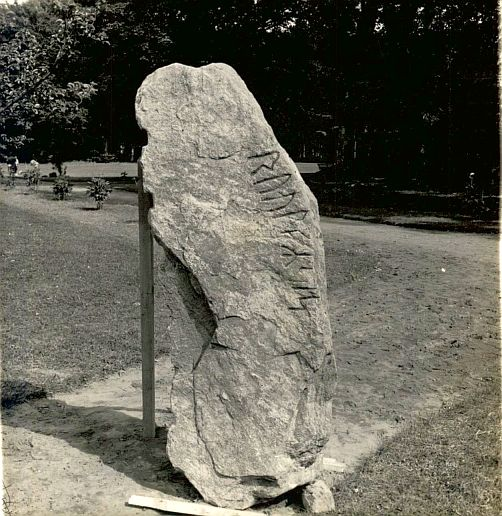
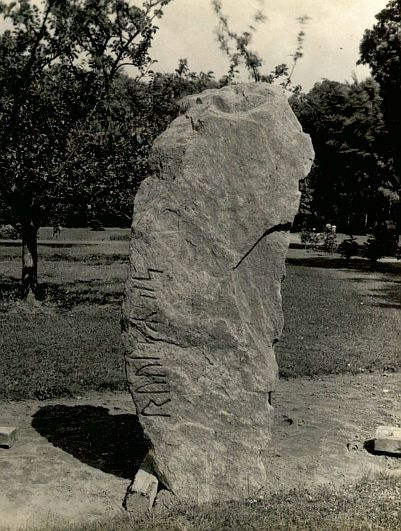
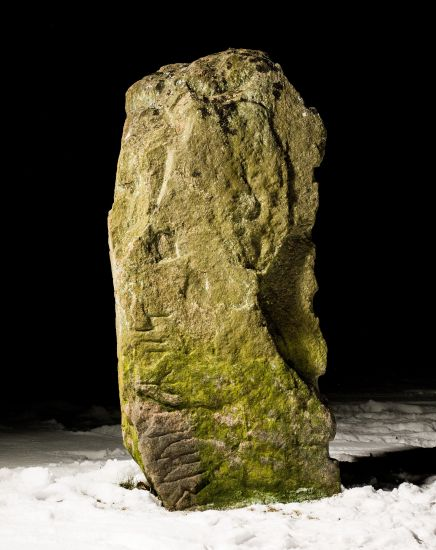
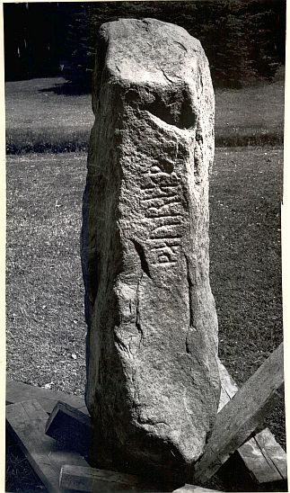
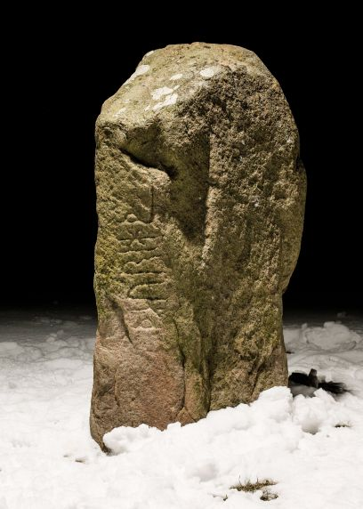

Schloss Jægerspris


Flemløse 1
Grobkörniger, bräunlicher Granit mit schwarzen Streifen
Höhe: 175 cm
Breite: 47 cm
Dicke: 56 cm
Runenhöhe: 15-16 cm
Runeninschrift :
Zum Andenken an Roulf, welcher der Gothi der Landspitzenbewohner war, steht dieser Stein; die Söhne setzten (ihn) zum Gedächtnis; Awer malte (d.h. ritzte die Runen).

Flemløse 2
Feinkörniger, geschichteter rötlicher und graublauer Granit
Höhe: 175 cm
Breite: 67 cm
Dicke: 20 cm
Runenhöhe: 12-15 cm
Runeninschrift :
Roulf

Sønderby
Ziemlich feinkörniger rötlicher Granit
Höhe: 146 cm
Breite: li: 22 / re: 55 cm
Runenhöhe: 7,5 10,5 cm
Runeninschrift :
Thorith

Schloss Jægerspris
Geo-Daten N/O: 55.85543 11.97426
Anschrift: Slotsgården 20, 3630 Jægerspris
Im Park von Schloss Jægerspris sind folgende Runensteine aufgestellt (Meine Fotos vom 30.08.2016 können im linken Bereich über die Verlinkung abgerufen werden):

Aufnahme aus den 1930er Jahren von Erik Moltke - Lizenz: CC-BY-SA - Der digitalen Sammlung des Nationalmuseums Kopenhagen entnommen.
Listennummer : DR 192 / DK Fyn2
Dieser Runenstein, der der frühen Wikingerzeit zuzurechnen ist, wurde zu Beginn des 16. Jahrhunderts auf dem Kirchhof von Flemløse/Fünen entdeckt. Er soll seinen ursprünglichen Platz am Fuße eines Hügels gehabt haben, der auf einem Feld lag, das gemarkungsmäßig zur Nachbargemeinde Voldtofte gehörte. Im Flemløse Kirchhof lag der Stein dann noch am Ende des 18. Jahrhunderts, bis er zurecht gehauen und in der Kirchhofmauer eingesetzt wurde. Aufgrund eines alten Berichtes ist hierzu überliefert, dass der Stein ursprünglich 225 cm hoch und 86 cm breit war. Auf Veranlassung von Kronprinz Frederik (VII.) wurde der Stein 1842 nach Frederiksgave (heute: Schloss Hagenskov/Fünen) verbracht. 1854 kam er nach Kopenhagen und später auf Schloss Jægerspris, wo er mit den Runensteinen Flemløse 2 und Sønderby am Fuße des Grabhügels der Gräfin Danner aufgestellt wurde. In den 1930er Jahren wurden dann alle drei Runensteine um diesen Grabhügel herum aufgestellt, wo sie heute noch anzutreffen sind.
Dieser Stein steht auf der Rasenfläche, ca. 20 m nordöstlich vom besagten Grabhügel.
Über die dänische Runendatenbank findet man hier alle Infos zu diesem Runenstein.

Zeichnung von Jon Skonvig von 1627 - Lizenz: CC-BY-SA - Der digitalen Sammlung des Nationalmuseums Kopenhagen entnommen.

Fotografie des dänischen Runologen Erik Moltke von 1933 - Lizenz: CC-BY-SA - Der digitalen Sammlung des Nationalmuseums Kopenhagen entnommen.

Fotografie von Roberto Fortuna vom 15.03.2013. Im Vorfeld zu dem 2016 erschienenen Buch von Lisbeth M. Imer "Danmarks Runesten - en fortælling" reiste die Runologin des Nationalmuseums Kopenhagen mit ihm zur Bestandsaufnahme durch die Lande. Herr Fortuna hat die Runensteine abends bei Dunkelheit mit Schräglicht aufgenommen und darüber wirklich herausragende Fotos erzielt.
Lizenz: CC-BY-SA - Der digitalen Sammlung des Nationalmuseums Kopenhagen entnommen.
Listennummer : DR 193 / DK Fyn3
Dieser Runenstein lag vor dem Eingang zu einem Hof in Voldtofte/Fünen, bis man ca. 1840 auf die Schriftzeichen aufmerksam wurde. Im Jahre 1842 wurde er auf Veranlassung von Kronprinz Frederik (VII.) nach Frederiksgave (heute: Schloss Hagenskov/Fünen), und 1854 zusammen mit den Runensteinen Flemløse 1 und Sønderby nach Schloss Jægerspris verbracht, wo sie am Fuße des Grabhügels der Gräfin Danner aufgestellt wurden. In den 1930er Jahren wurden dann alle drei Runensteine um diesen Grabhügel herum aufgestellt, wo sie heute noch anzutreffen sind.
Da die Inschrift nur einen Namen erwähnt, wie z.B. auch der Stein von Hovslund, kann keine Aussage dazu getroffen werden, ob hier der Runenritzer oder der Verstorbene gemeint ist. Von der Form und der Anbringung der Inschrift her erinnert er an den Stein von Starup.
Dieser Stein steht auf der Rasenfläche, ca. 9 m nordwestlich von dem o.a. Grabhügel.
Über die dänische Runendatenbank findet man hier alle Infos zu diesem Runenstein.


Zwei Fotgrafien von Erik Moltke aus den 1930er Jahren - Lizenz: CC-BY-SA - Der digitalen Sammlung des Nationalmuseums Kopenhagen entnommen.

Aufnahme vom 15.03.2013 von Roberto Fortuna (Ergänzende Infos s.o.) - Lizenz: CC-BY-SA - Der digitalen Sammlung des Nationalmuseums Kopenhagen entnommen.
Listennummer : DR 191 / DK Fyn12
Von diesem Runenstein gibt es einen ersten Bericht aus dem Jahre 1809 von Pastor Halsøe aus Sønderby, der berichtet: ...in einem Steinzaun bei Schloss Frederiksgave/Fünen (heute: Schloss Hagenskov) steht ein Stein von 2 bis 3 Alen (Elle = 0,6277 m) Größe, der aus einem abgetragenen Hügel auf einem Feld ausgegraben wurde.
Auf Veranlassung von Kronprinz Frederik (VII.) wurde der Stein 1842 nach Schloss Hagenskov/Fünen (früher: Schloss Frederiksgave) verbracht. 1854 kam er nach Kopenhagen und später auf Schloss Jægerspris, wo er mit den beiden Runensteinen Flemløse 1 und Flemløse 2 am Fuße des Grabhügels der Gräfin Danner aufgestellt wurde. In den 1930er Jahren wurden dann alle drei Runensteine um diesen Grabhügel herum aufgestellt, wo sie heute noch anzutreffen sind.
Dieser Stein steht auf der Rasenfläche, ca. 14 m nordöstlich von diesem Grabhügel.
Über die dänische Runendatenbank findet man hier alle Infos zu diesem Runenstein.

Fotografie des dänischen Runologen Erik Moltke aus den 1930er Jahren - Lizenz: CC-BY-SA - Der digitalen Sammlung des Nationalmuseums Kopenhagen entnommen.

Aufnahme vom 15.03.2013 von Roberto Fortuna (Ergänzende Infos s.o.) - Lizenz: CC-BY-SA - Der digitalen Sammlung des Nationalmuseums Kopenhagen entnommen.
In der Brochüre "Danmarks Runesten - Runesten i landskabet - en registrant" von 1992, Miljøministeriet - Skov- og Naturstyrelsen, sind die Fotos von zwei dieser Runensteine vertauscht worden. Beim Sønderby Stein wird das Foto vom Flemløse Stein 2 gezeigt und umgekehrt (Seite 15 und 17). Dies fiel mir erst bei meiner Tour 2016 auf, da ich diese Informationen für meine Homepage auch von dort übernommen hatte.